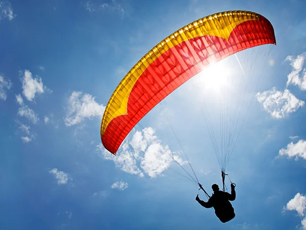

Parapente
El deporte del parapente es la forma más sencilla y emocionante de
volar y también el aparato volador más ligero que existe, hace que sea
uno de los deportes aéreos más accesibles y populares, un equipo de
vuelo completo ronda los 20 kg., se despega y aterriza con los pies.
Se utiliza un planeador dirigible, semirrígido y muy ligero que se
maneja fácilmente. Este planeador es simple, el aire entra por la
parte delantera e infla el interior de las dos telas, superior e
inferior. La tela del planeador actúa igual que el ala de un avión,
empujando hacia arriba y permitiendo mantener el vuelo.